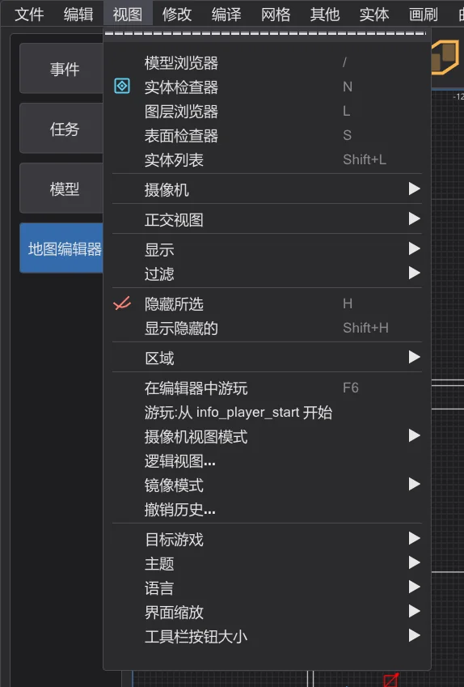
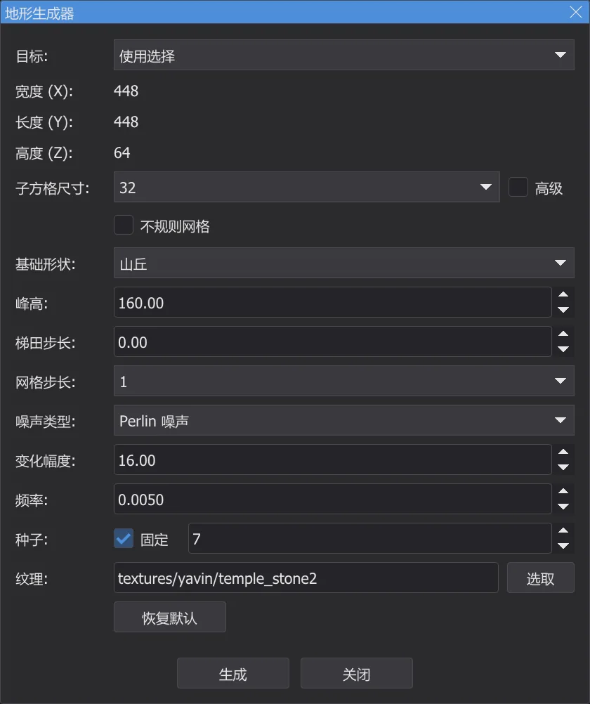
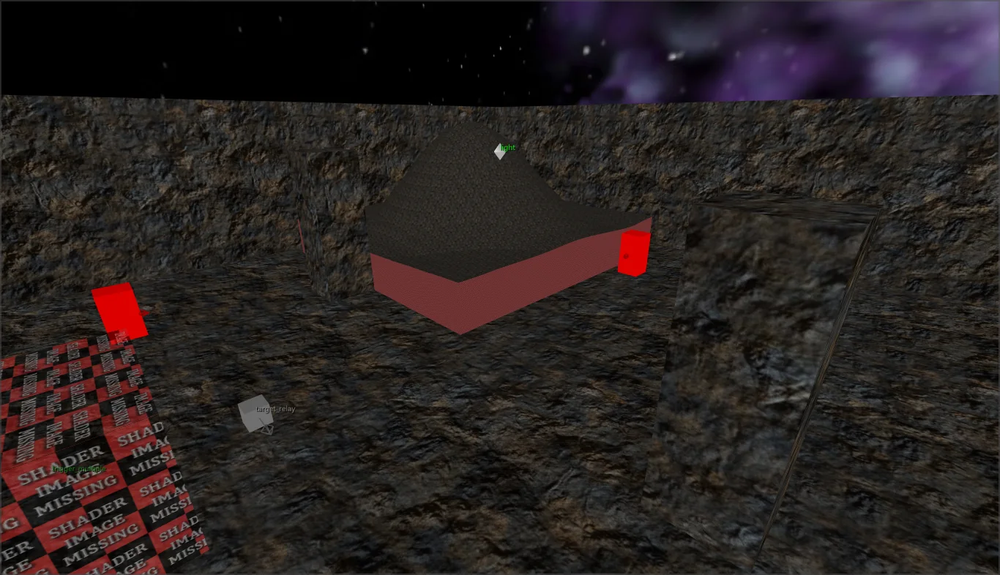
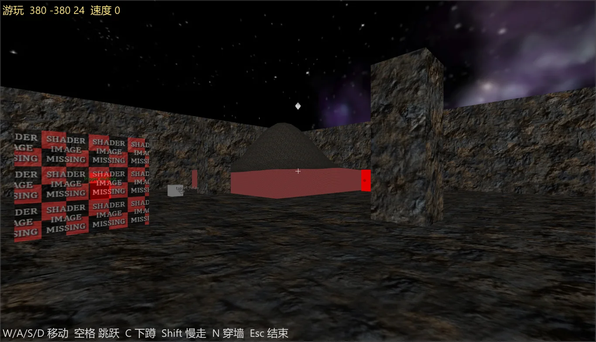
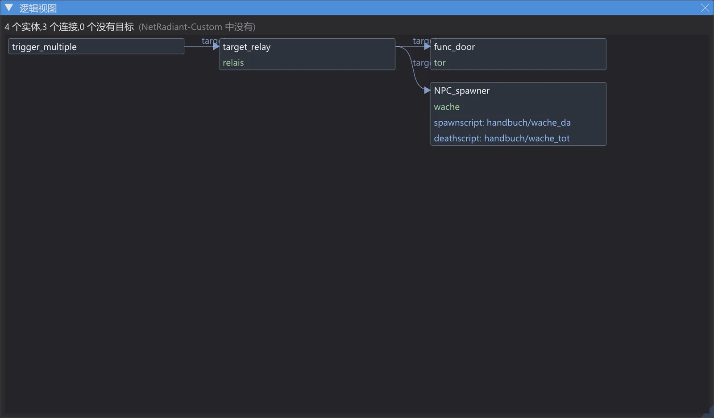
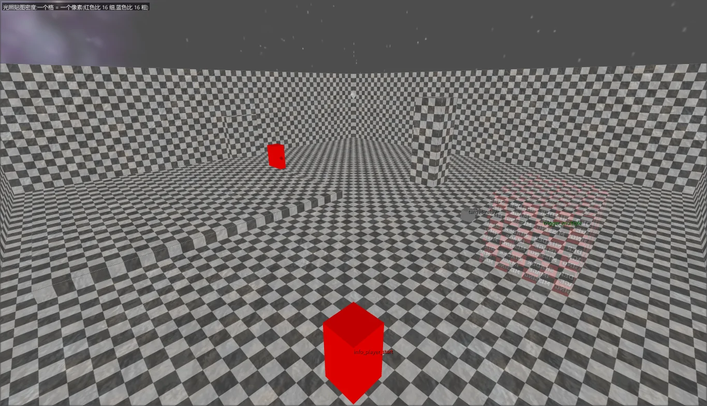
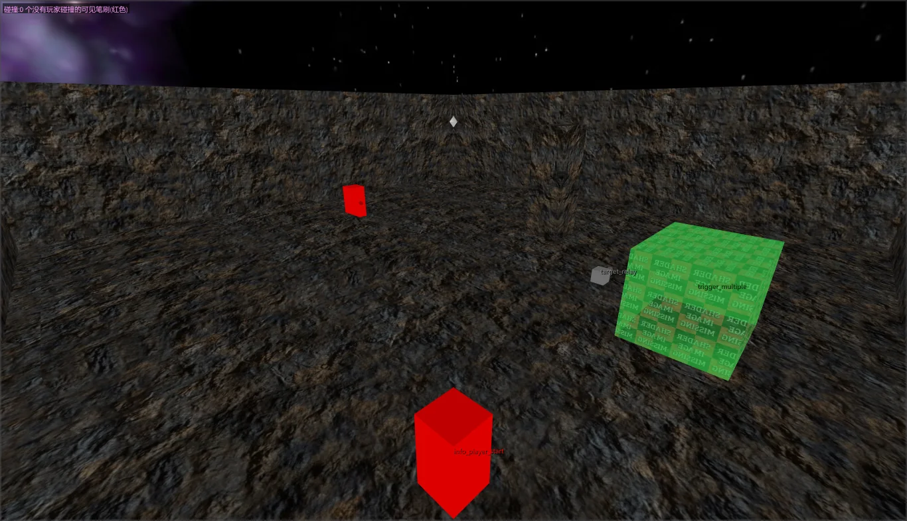
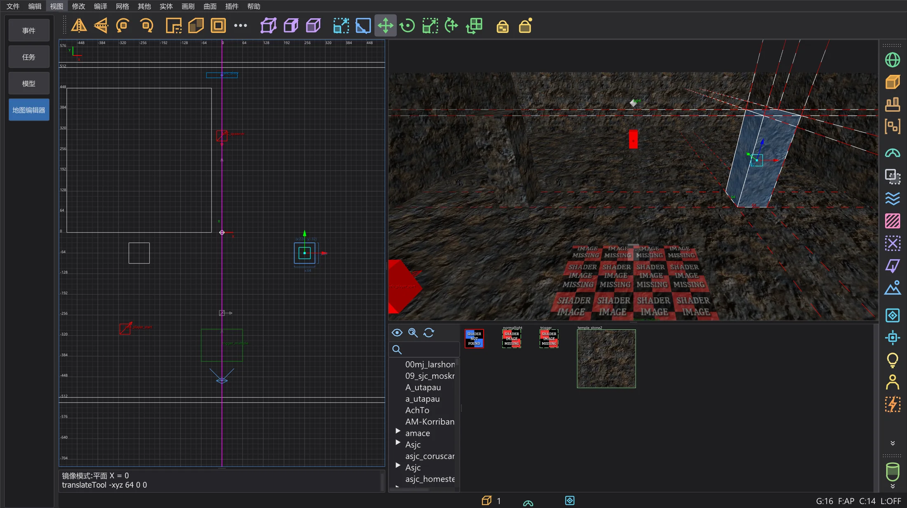
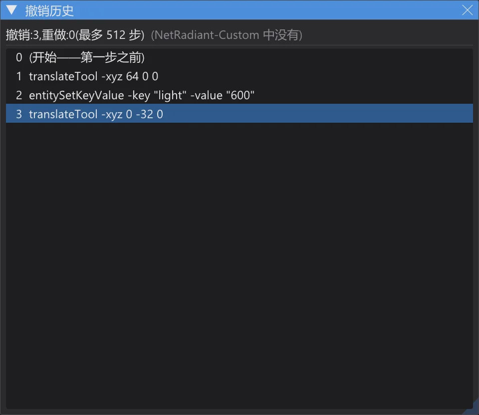

地图编辑器:地形、试玩、逻辑、镜像及更多
生成地形,无需编译即可在地图中行走,查看实体之间的连接,检查光照贴图密度和碰撞,用镜像模式编辑对称地图,并在撤销历史中跳转。
本页除 Terrain Generator 外的所有功能都不在 NetRadiant-Custom 中:每个功能都有带此提示的独立菜单项;全部关闭时,编辑器的行为与 NetRadiant-Custom 相同。新菜单项位于 视图 的末尾、程序设置的上方。

Terrain Generator(地形生成器)#
Plugins > TerrainGenerator > Generate Terrain 是 NetRadiant-Custom 当前源代码(master,20260114 版本之后)中的插件,逐行移植:相同的数值得到与原版相同的高度、三角形和纹理。在视图中工作时对话框保持打开。




- 目标: 使用选择 使用所选画刷的尺寸并替换它;手动尺寸 在原点周围生成地形。
- 基础形状:(山丘、陨石坑、山脊、斜坡、火山、山谷、隧道……)、噪声类型:、变化幅度:、频率:、阶梯和网格步长与原版相同;生成 是一个撤销步骤。
- 自有补充:种子: 固定 用固定值开始随机数——相同的数值会再次得到相同的地形。关闭时(默认),随机序列像 NetRadiant-Custom 中一样继续。
自由分屏窗口#
Preferences > Interface > Layout > 自由分配分割窗口(Split 布局):四个窗口的角落都会出现一个小菜单——摄像机、XY、XZ 或 YZ,也可以两个窗口显示同一视图。Ctrl+Tab 切换当前 2D 窗口的类型,分隔条位置会保留。关闭时(默认),四个窗口像 NetRadiant-Custom 中一样固定。
在编辑器中试玩#

- 无需编译:碰撞直接来自画刷和面片,其内容与 q3map2 会赋予的相同(游戏的 surfaceparm、clip 画刷、nonsolid、水……)。行走、跳跃、楼梯和斜坡使用游戏移动代码(Pmove)的移植——与程序预览中的相同:JKA 和 Movie Duels,或 Jedi Outcast 的规则。
- W/A/S/D 移动,空格跳跃,C 或 Ctrl 蹲下,Shift 慢走,鼠标观察,N 切换穿墙模式,Esc 结束并把摄像机放回原处。
- 游玩:从 info_player_start 开始:开启时从第一个 info_player_start 开始(其 origin + 9 和 angle,与游戏的选择相同);关闭时从摄像机位置开始。
逻辑视图#

- 逻辑视图 将实体之间的每个连接从左到右绘制成图:target、target2……target5、NPC_target、门的目标以及实体定义中的每个 *target* 键;脚本键(spawnscript、usescript、deathscript……)列在实体的框中。
- 单击某个框会选中该实体,并让 2D 视图和摄像机居中显示它;双击脚本行会在脚本编辑器中打开 ICARUS 脚本。鼠标滚轮缩放,右键或中键拖动平移。
- 没有对应 targetname 的目标显示为红框——在游戏中这是一个无效的连接。
摄像机视图模式#




- 光照贴图密度:每个面显示光照像素大小的棋盘格,计算方式与 q3map2 相同(q3map_lightmapSampleSize、实体的 _samplesize 和 _lightmapscale、-samplesize;放大到面能放进 128 个像素为止)。比 16 细为偏红,粗为偏蓝,没有光照贴图的面为灰色。
- 碰撞:按 q3map2 赋予的内容给画刷着色——playerclip 品红、monsterclip 橙色、botclip 黄色、shotclip 青色、nodrop 暗红,以及水、黏液、岩浆、雾和触发器。玩家能穿过的可见墙(没有玩家碰撞)显示为亮红色。
- 可见性 (PVS) 和 三角形负载 需要地图旁边已编译的 .bsp(含 VIS):前者用绿色显示引擎从摄像机所在簇绘制的内容,后者显示从各位置绘制的三角形数量热图。数值显示在摄像机视图左上角。
镜像模式#

- 镜像模式:关闭、镜像平面 X、镜像平面 Y 或 镜像平面 Z;平面穿过原点,或者使用 平面穿过选择中心(对齐网格) 穿过选择在网格上的中心。它在 2D 视图中显示为品红色线条。
- 对选择的每次修改都会在同一个撤销步骤中写入其对应物——拖动时实时进行。画刷和面片逐个处理,点实体和组整体处理;origin、angle 和 angles 会被镜像,纹理按 Flip 的方式处理(Texture Lock 按设置)。
- 如果精确的镜像已经存在,它就成为对应物;否则第一次修改会创建一个镜像副本。删除会同时删除两者;撤销会精确恢复两者。对称位于平面上的对象没有对应物。
撤销历史#

撤销历史 列出所有撤销步骤(最早的在前),下方以灰色列出重做步骤。单击会通过所需次数的撤销或重做跳到该步骤之后的状态——每一步都有控制台输出,与 Ctrl+Z 和 Ctrl+Y 相同。列表能回溯的范围与撤销队列相同(Preferences > Undo Queue Size,默认 512)。
从所有模型文件夹恢复 misc_model#
从几何体恢复 misc_model(保留编辑器数据)现在会在游戏的所有模型文件夹中查找模型,而不只是地图着色器所在的文件夹。模型索引(每个模型和网格的顶点数、三角形集合和着色器)以 karte_modellindex_<…>.txt 保存在设置文件夹中。第一次——以及有新的或修改过的 .pk3 时——bhed_q3map2 会把缺少的模型加载一次(大型安装约需半分钟);之后只加载网格与 .bsp 中三角形面匹配、或其着色器被 .bsp 使用的模型。控制台会列出索引和候选模型。
| 地图 | 之前 | 现在 |
|---|---|---|
| t2_trip | 0 | 13 |
| yavin1 | 18 | 32 |
| hoth2 | 5 | 32 |
| kor1 | 52 | 52 |
| jeditemple_garden(源文件已知) | 265 / 265 | 265 / 265 |
GPU 阴影测试(已关闭)#
bhed_q3map2 为 -light 提供了命令行开关 -bhedgpu:“从光照像素到灯光的射线是否被遮挡?”的测试在显卡上运行(Direct3D 11),光照计算本身仍在 CPU 上。结果与不使用时逐字节相同——已在五张地图和 ctest q3map2_gpu 中验证。在测量所用的电脑(32 线程,RTX 4070 Laptop)上它并没有更快(mp/duel1 2.3 秒 → 3.2 秒,kejim_post 10.0 秒 → 11.3 秒),因此不在 Build 菜单中,保持关闭。